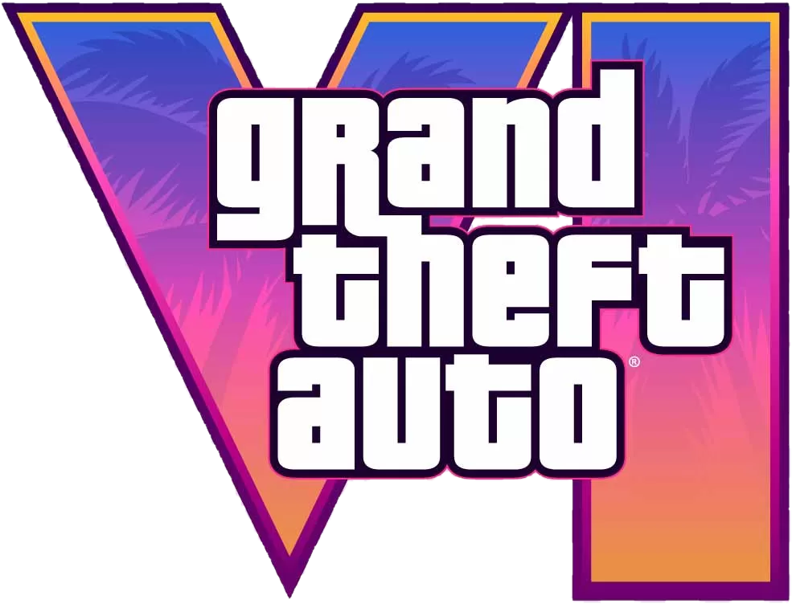
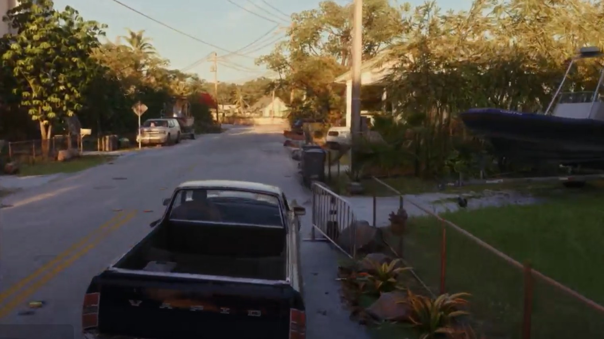
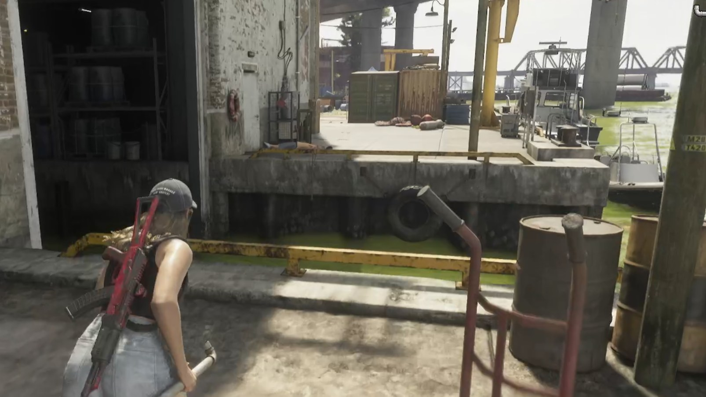

Нарезчик GTA 6Стримы GTA 6 сейчас идут круглые сутки, и за короткие клипы с них платят. Покажу, как нейросеть сама смотрит стрим, ловит лучшие моменты и к утру складывает готовые вертикальные клипы с субтитрами. Все программы бесплатные.

ghost: всем привет из Москвы
lol_lol: сколько уже стримит?
kirill: 9 часов подряд
nightowl: ещё одна миссия и спать
vice_fan: какой там город красивый
mike_77: он опять за руль сел 💀
kirill: ЧТООО
lol_lol: ВЕРТОЛЁТ 🔥🔥🔥
ghost: КЛИП КЛИП КЛИП
Обычно в чате спокойно: 10 сообщений за 10 секунд. Но стример угнал вертолёт, и за те же 10 секунд вдруг сотня сообщений, капс и огоньки. Это сигнал: в игре только что случилась дичь. Программа ловит скачок и сразу вырезает этот кусок эфира.

vice_fan: музыка топ
kirill: ЧТООО
lol_lol: ВЕРТОЛЁТ 🔥🔥🔥
ghost: КЛИП КЛИП
mike_77: АХАХАХАХ
nightowl: 💀💀💀💀
vice_fan: ОН СЕРЬЁЗНО
lol_lol: LMAO
kirill: ДА ЛАДНО 🔥
Обычный фон: болтают, здороваются, спрашивают про музыку.
В девять раз больше за те же 10 секунд. Значит, на экране что-то, что люди захотят пересмотреть.
22 секунды до взрыва и 8 после. Сам момент не пропадает, даже если чат отреагировал с опозданием.
Записывает стрим и держит в памяти последние 10 минут.
Без твоего аккаунта. Каждые 2 секунды считает сообщения.
Сообщений в 3 раза больше обычного? Это момент.
30 секунд вокруг взрыва, потом минута паузы, чтобы не резать одно и то же.
Формат для Reels и TikTok, крупные субтитры. Кладёт в папку.
Все программы бесплатные. Нужен только компьютер и Claude.
Ставишь только Claude Code. Всё остальное он поставит сам, тебе нужно будет пару раз нажать «разрешить».
Помощник, который сам пишет и запускает программы. Нужна подписка Claude. Сайт: claude.com/claude-code
Забирает прямой эфир со стрима.
Режет видео и делает из него вертикальное.
Слушает речь и делает субтитры.
Создай пустую папку «Клипы», открой в ней Claude Code и вставь текст ниже целиком. Впиши в конце имя канала и язык. Claude сам соберёт программу, проверит её 5 минут на живом стриме и покажет, как идёт счётчик чата.
Сделай мне программу-нарезчика стримов Twitch и запусти её. Вот как она должна работать: 1. Берёт прямой эфир Twitch-канала через yt-dlp и пишет его через ffmpeg кусками по 5 секунд в кольцевой буфер на 10 минут. Старые куски сама стирает, но только свои временные. 2. Параллельно анонимно подключается к чату этого канала (без моего аккаунта) и запоминает время каждого сообщения. 3. Каждые 2 секунды считает, сколько сообщений пришло за последние 10 секунд, и сравнивает с обычным уровнем (медиана за последние 5 минут). 4. Если сообщений в 3 раза больше обычного и их не меньше 15, это «взрыв чата». Ждёт 18 секунд, чтобы запись догнала, и вырезает из буфера 30 секунд: 22 секунды до взрыва и 8 после. После клипа пауза 60 секунд. 5. Из куска делает вертикальное видео 1080x1920: размытый фон, картинка стрима по центру. Субтитры делает Whisper (модель large-v3-turbo, язык стрима), крупный белый шрифт с чёрной обводкой. 6. Складывает клипы в папку «Клипы стримов/дата_канал» и ведёт файл лог.csv: время, сколько было сообщений и что писали в чате. 7. Работает всю ночь: компьютер не должен засыпать, остановка по Ctrl+C или через 8 часов. Порог настраиваемый. Сначала проверь порог 5 минут на живом стриме и покажи мне, как идёт счётчик чата. Канал для нарезки: ИМЯ_КАНАЛА Язык стрима: en или ru
Открой twitch.tv, найди категорию Grand Theft Auto VI и возьми стрим, где больше всего зрителей. Имя канала в адресе: twitch.tv/имя.
Американские стримеры выходят в эфир, когда у нас ночь. Чем больше зрителей, тем живее чат и тем больше клипов.
Напиши Claude: «запусти нарезчика на ночь». Он сам всё включит.
Крышку ноутбука не закрывай, иначе он уснёт вместе с тобой.
Дальше всё делает нейросеть.
Подвох один: программа ловит моменты только пока идёт прямой эфир. Стример закончил, ловить больше нечего. Поэтому выбирай тех, кто стримит долго.
Каждый клип уже вертикальный, с размытым фоном и крупными субтитрами. Рядом файл лог.csv: во сколько был взрыв и что писал чат. Из этого удобно придумать заголовок.
Это и есть YouTube без лица: ты не снимаешься, не говоришь в камеру, не монтируешь часами. Нейросеть ночью нарезала моменты, утром ты выкладываешь их сразу в три места.
Заведи одинаковое имя в YouTube, TikTok и Instagram, например «GTA 6 Моменты». Аватар и шапка в стиле игры.
2–4 клипа в день. Один и тот же клип идёт во все три приложения.
Заголовок сверху на первую секунду. В описании имя стримера и хэштеги #gta6 #gtavi #shorts.
Через неделю видно, какие стримеры и какие моменты набирают больше. Режь их чаще.
Площадки вроде Whop Content Rewards: стример или бренд платит за просмотры клипов, обычно около $1 за 1000 просмотров. Платят и маленьким каналам, если клип одобрили.
Нужно 1000 подписчиков и 10 млн просмотров Shorts за 90 дней. Тогда YouTube делится доходом с рекламы.
Канал собирает аудиторию. Её можно вести в свой Telegram и предлагать что-то своё: гайды, услуги, рекламу.
Клип в 30 секунд в программу TikTok не попадает. Склеивай 3–4 момента в «Топ моментов ночи».
В России встроенных выплат нет. Reels берут просмотрами и подписчиками, которых ты ведёшь дальше.
Субтитры на крике бывают с ошибками. Если в запись попала реклама Twitch, такой клип не бери.
Важно: канал из одних чужих нарезок YouTube может не взять в партнёрку, это «повторно использованный контент». Добавляй своё: заголовок, подборки, короткий комментарий текстом. И бери стримеров, у которых есть кампании нарезки или которые сами разрешают клипы, иначе на ролик могут пожаловаться.
Никаких настроек руками. Пишешь Claude обычной фразой, он поправит программу сам.
Бесплатная программа OBS умеет «запись последних 30 секунд» по одной кнопке. Как повтор гола в футболе.
OBS → «+» → «Захват экрана» → окно браузера со стримом.
Настройки → Вывод → «Буфер повтора»: включить, 30–40 секунд.
Горячие клавиши → «Сохранить повтор» → F9. На Mac включи OBS в «Мониторинг ввода».
Последние 30 секунд лежат в «Фильмах». Вертикалку сделай в CapCut или попроси Claude.
Если что-то не получилось, напиши мне в директ, разберёмся.